Devlog Seventeen Overview
You may have previously thought that travelling between the Dimensions/ Realms in this game was already possible. But it was not. This update fixes that, and adds a few things as well.
And I just want to say, that I am very happy with the devlog updates I have been releasing recently. With each new update, it really does feel like the game is getting more and more complete. I just really need to keep adding in more of the crafting and furnace recipes. I really regret not doing this when I was adding the items. Thankfully there's been a bunch done for this update, and a bunch more will keep getting added. And I'm of course not going to show everything. Only the recipes that might be interesting or related to the devlog.
Main Features
The first feature I am going to talk about is the new Realm Generator block and UI. The player can insert either an Inferno Realm Core or the Void Realm Core along with a fuel to power the machine. Which at least for now is a Ruby. Then you can press the Travel button to go to either the Inferno Realm or the Void Realm. Depending on the core type the player put in. I also added a home button, which will take the player back to the Main Realm. Which I might start calling the World Realm for lack of a better name.
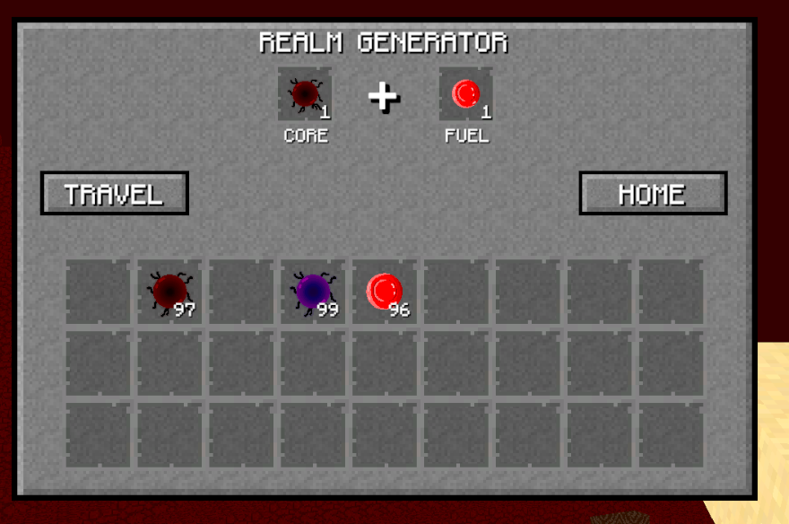
I'm not sure if I'm going to keep the realm generator working exactly like it is right now, but for now it's working and it's good enough. I just had so little ideas on how to get the player to travel to other realms. I was thinking of doing a nether portal type of thing, but that's harder to code, and I want something that's more consistent between all the dimensions.
Now this part is less a feature, and just something I'm glad I didn't forget to add. Because player's arent't always the smartest thing in the world. When you travel to another dimension for the first time, a Realm Generator will spawn shortly after joining the realm. This is because not all player's would think of a way to get back when the use the generator. And it doesn't take any items to use the button for going back to the World Realm. At least not right now. Might make something required for this in the future.
Since I made it where the player can actually travel to the other realms, I thought I would give them a bit more love. The Void Realm I did almost nothing with. I just made it where the DurDurman (Endermen) can spawn in the Realm, and they now drop Eye of DurDur. This item can be used in the crafting of the Void Chest. The Inferno Realm had a lot more love. I made it where the terrain is a lot more hellish to travel though. I used to say the terrain had hills. Mountains is more accurate now. Those things are huge. And the terrain here will be even more hellish when I finally add in the lava.
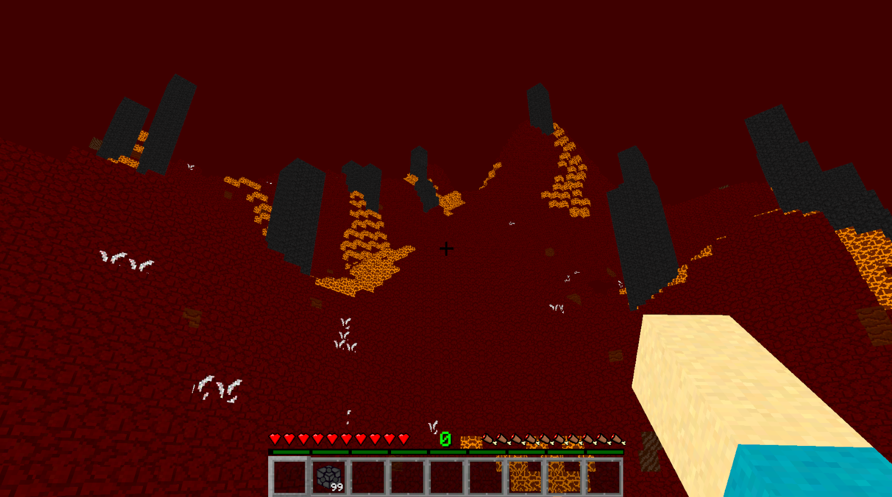
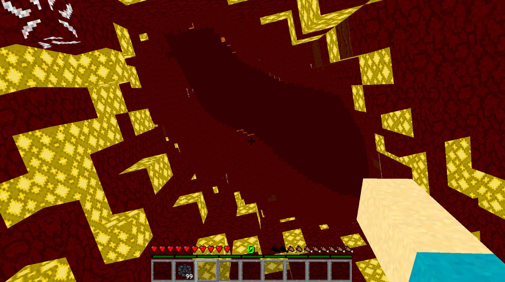
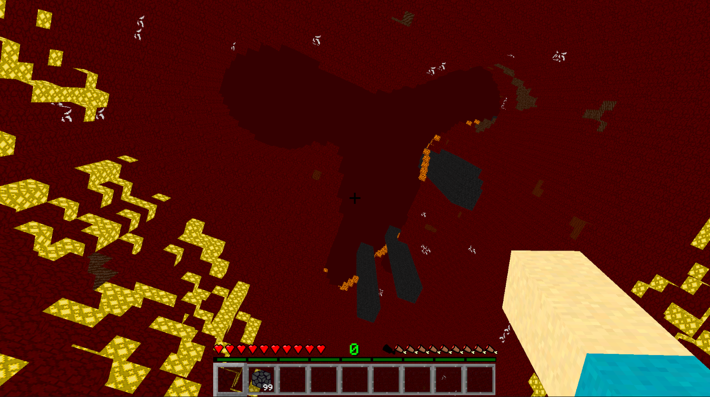
Along with adjusting the terrain, I finally fixed an annoying little problem: mip-mapping. Basically there is now longer annoying little lines on blocks that are further away. This makes the game look so much better. You might not have noticed it looking at the pictures on the devlogs, but I certainly noticed.
Now let's move a side step away from the realms. I finally added in a death menu to the game. So now when the player runs out of health, they can't keep playing like they were able to before. This is one of those things where I completely forgot about adding it. When the player presses the button to respawn, they'll lose all their levels, and teleport back to their last save point. I was thinking about dropping all their items on the ground, but I decided against it. This game will mainly focus around building, and the risk of losing all your good items can be quite annoying for a builder. Also I only thought about this because I fell off the terrain in the Void Realm and didn't die when I fell too far. So now that is also fixed: the player will instantly die when they fall below the terrain in the Void Realm.
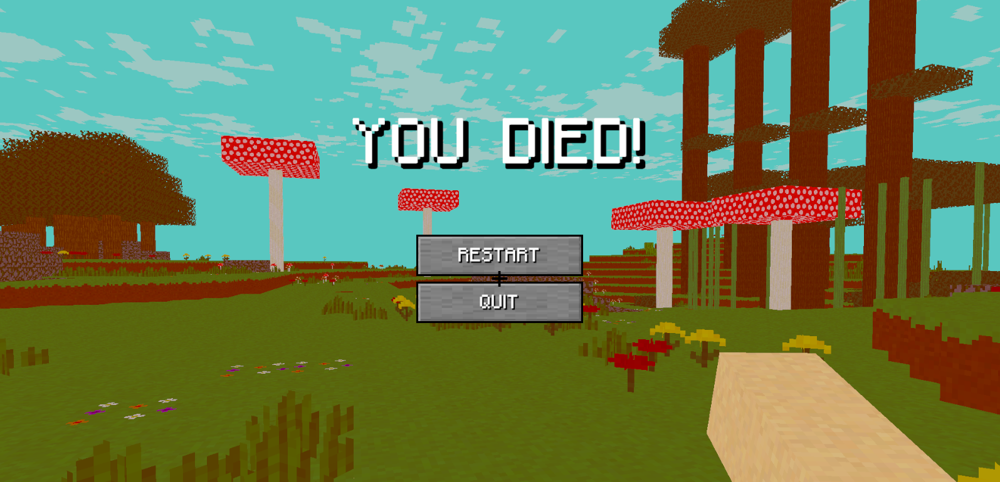
I finally made it where Survival and Creative are their own seperate game modes. You can press either F1 or F2 to enter the respective game modes. In Creative, the player's health and hunger go away. Enemies will also no longer attack the player. There is some other things like this as well like durability no longer getting reducted. In Survival mode, all that stuff comes back. The player can also no longer open the Creative Menu.
Another small little addition I added into the game is a custom cursor. I think I made it a little too large, but I'll see what the test players think before I change it. Either way, it makes the game feel and look just a tad more polished.
Blocks
Since I'm still trying to hold back from adding much more blocks and items, this devlog update won't have much in the way of blocks. Literally just the Realm Generator Block. This new block is how the player will get from realm to realm. But that's all talked about in the Main Features section of this page. In the picture below I am also holding an Eye of DurDur, which is dropped by a DurDurman.
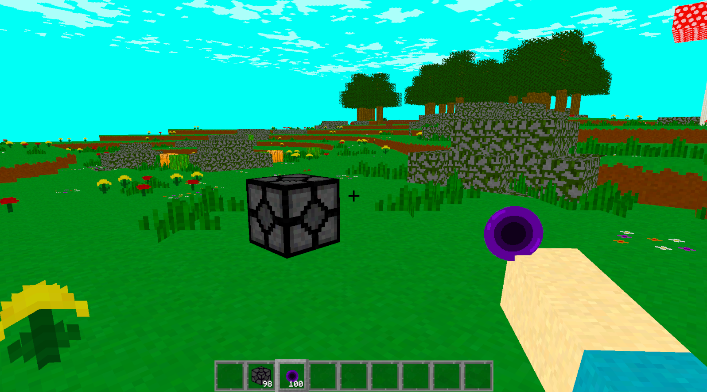
Recipes
I really need to start adding in a bunch of recipes. Otherwise when I release the Alpha 1 version of the game, the player won't be able to craft much at all. So here is a bunch of new recipes, and expect there to be a lot more. Oh, and these will of course be added onto the Recipes page of this website.
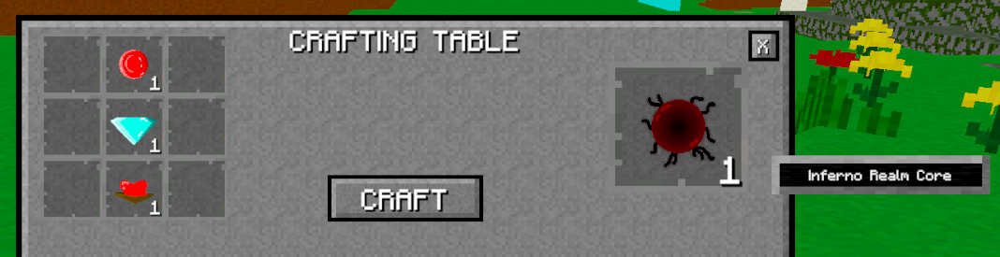
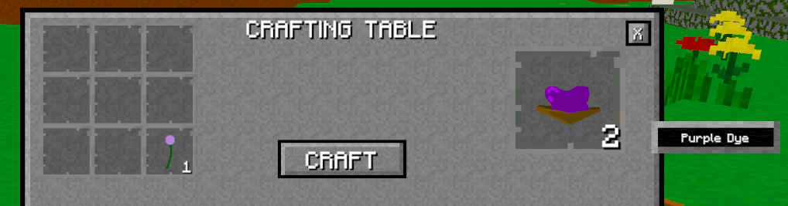
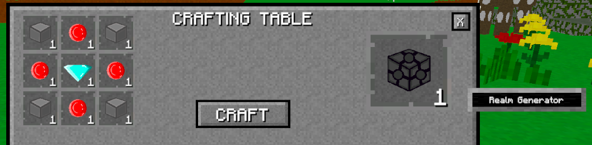
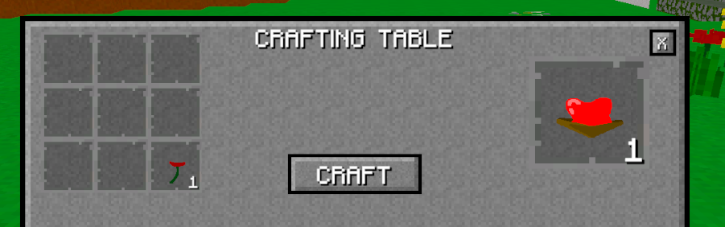
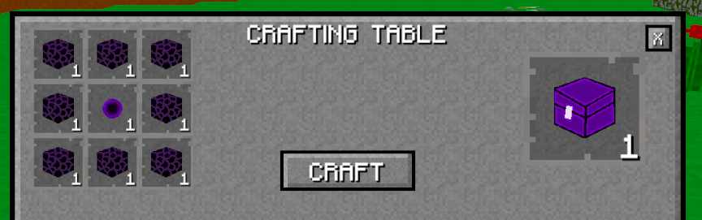
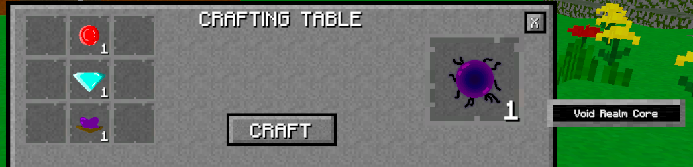
Conclusion
There isn't much visual stuff to show off in this devlog update. And that's alright. It was some important stuff that had to get done.
It was actually quite a struggle to get the travelling between dimensions working. The code isn't complicated per se; it was more me just completely not thinking when I was writing it. Like writing over the player position save data when in new dimensions, and being confused why I'm in a weird spot in the main dimension. I had to make different save data sets for each dimension. Which should've been obvious. So it took a lot longer than it could've. But it's working good now, and I'm happy.
I'm trying to think of what I want the next devlog update to be. There are only a few tasks left before I can release the alpha 1 version of the game. Some of them are kinda related to a certain theme, which I'm not going to spoil. But I am going to tease you with a single word: block. So the next devlog will most likely tackle those tasks.